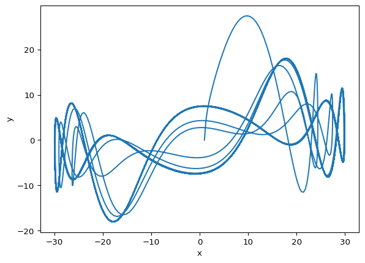

Symbolic round-trip between SymPy and ModelingToolkit.jl
Why this matters
Many dynamical systems are naturally expressed as higher-order ODEs, but most simulation backends only support first-order systems. Manually rewriting \(\ddot{x} = f(x)\) into a first-order system is tedious and error-prone — you need to introduce auxiliary variables, track extra initial conditions, and keep everything consistent.
tvbo automates this by round-tripping through ModelingToolkit.jl: send a higher-order system to Julia, let MTK’s compiler do the structural transformation, and get back clean first-order symbolic equations ready for any backend.
Mark a state variable with equation_order: 2 to declare its equation as second-order. Provide the derivative initial condition separately withderivative_initial_value: 2.0:
from tvbo import SimulationExperimentfrom IPython.display import Markdownexp = SimulationExperiment.from_file("yaml/lorenz_higher_order.yaml")Markdown(exp.dynamics.generate_report(derivative_notation='dot'))
/Users/leonmartin_bih/tools/tvbo/.venv/lib/python3.13/site-packages/requests/__init__.py:113: RequestsDependencyWarning: urllib3 (2.6.3) or chardet (6.0.0.post1)/charset_normalizer (3.4.4) doesn't match a supported version!
warnings.warn(
Lorenz63_HigherOrder
Second-order Lorenz variant from the MTK documentation. Variable x has equation_order=2, so d²x/dt² = σ(y-x).
tvbo correctly represents the second-order derivative
Step 2: Render MTK Code
code = exp.render_code("mtk")print(code)
using ModelingToolkit
using ModelingToolkit: t_nounits as t, D_nounits as Dt
using OrdinaryDiffEqTsit5
@component function Lorenz63_HigherOrder(; name)
@parameters begin
beta = 2.6666666666666665, [description="Geometric factor (8/3)"]
rho = 28.0, [description="Rayleigh number"]
sigma = 10.0, [description="Prandtl number"]
end
@variables begin
x(t)=1.0, [description="Second-order state variable. The equation x'' = σ(y - x) is automatically lowered to two first-order equations by MTK."]
y(t)=0.0, [description="Temperature difference (horizontal)"]
z(t)=0.0, [description="Temperature difference (vertical)"]
end
eqs = [
Dt(Dt(x)) ~ sigma * (y - x),
Dt(y) ~ -y + x * (rho - z),
Dt(z) ~ x * y - beta * z,
]
return System(eqs, t; name, checks=false)
end
@named sys_model = Lorenz63_HigherOrder()
sys = mtkcompile(sys_model)
u0 = [Dt(sys.x) => 2.0]
tspan = (0.0, 100.0)
prob = ODEProblem(sys, u0, tspan, jac=true)
sol = solve(prob, Tsit5(); saveat=0.01)
using Plots
plot(sol; title="Lorenz63_HigherOrder")
The template generates Dt(Dt(x)) — MTK’s notation for \(\frac{d^2 x}{dt^2}\)
The derivative initial condition is passed via:
u0 = [Dt(sys.x) =>2.0]
Step 3: Symbolic Round-Trip — Get Lowered Equations
Here is the key feature: we send the higher-order system to Julia, let MTK’s mtkcompile do the structural transformation, and extract the lowered first-order equations back as SymPy.
from tvbo.adapters.modelingtoolkit import ModelingToolkitAdapteradapter = ModelingToolkitAdapter()firstoder_ODE = adapter.lower(exp.dynamics)Markdown(firstoder_ODE.generate_report())
Detected IPython. Loading juliacall extension. See https://juliapy.github.io/PythonCall.jl/stable/compat/#IPython
Lorenz63_HigherOrder_FirstOrder
First-order equivalent of Lorenz63_HigherOrder (lowered via MTK).
MTK introduced x_t (written as xˍt in Julia) and produced four first-order equations:
The returned SymPy equations are standard sympy.Eq objects — they can be used for further symbolic analysis, code generation to other backends, or substitution.
Step 4: Run the Simulation
result = exp.run("mtk")result.get_state(["x", "y"]).plot(type="statespace")

This matches the original MTK tutorial’s \(x\)-\(y\) state-space plot.